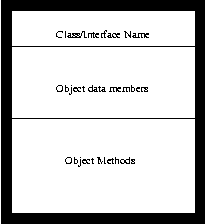
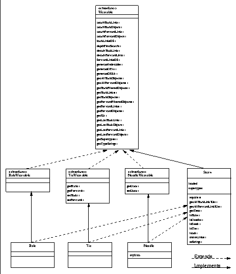

is the basic block in a Unified Modeling
Language (UML) model. Each block represents one object.
Figure is a UML class diagram for the primary interfaces
and implementations of objects in the HDM.
is the basic block in a Unified Modeling
Language (UML) model. Each block represents one object.
Figure is a UML class diagram for the primary interfaces
and implementations of objects in the HDM.

Figure: A simple UML building block.

Figure: A UML diagram of the core Haystack object interfaces/classes.